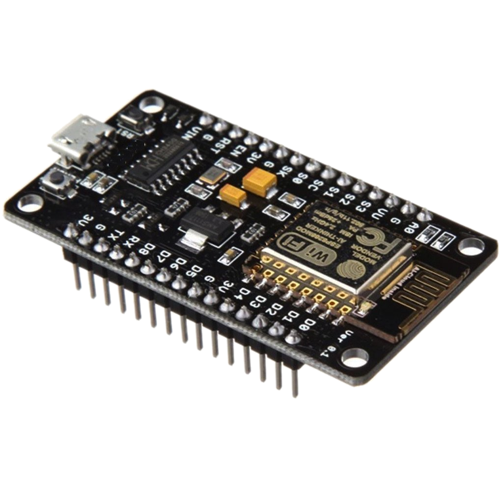

About me
Hello, and welcome to this site! My name is Maxiem Geldhof and I am currently a student in Informatics, at Ghent university. I have a great passion for all things concerning computers, especially software development.
I'm very interested in learning more about what's to know in the wide world of Informatics.
Right now, I'm focussing mostly on backend web development, so I can deploy server-side software for
mobile apps and create infrastructure for internet-of-things projects.
Be sure to check out my projects page for more info on these.
You can contact me at maxiemgeldhof@msn.com, or you can call me at the number 0496/38 00 20.

This is a project aimed at the integration of architecture and the digital world. It allows you to use microprocessor chips integrated into a chip to